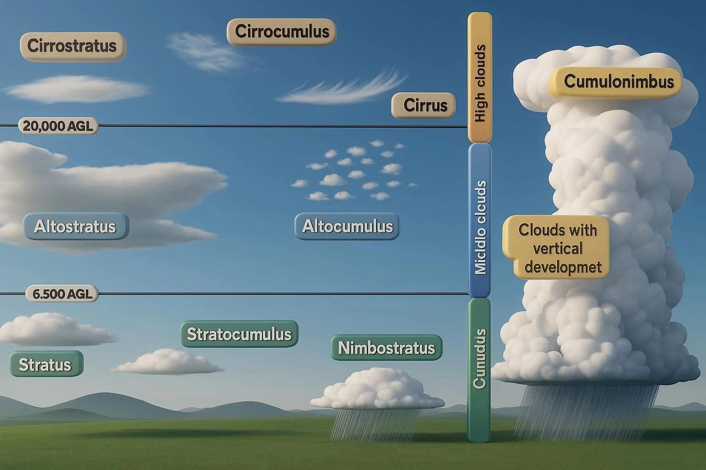

Cloud Visualization
Based on the Image and Information. Answer the questions below.
You can either click each question to show/hide the answer OR there is a button below to show all the answers at once.

You can either click each question to show/hide the answer OR there is a button below to show all the answers at once.
Clouds are sorted by the height of their base and their overall shape. The four major cloud categories are:
- Low-Level Clouds (Surface to 6,500 ft AGL)
- Mid-Level Clouds (6,500 to 20,000 ft AGL)
- High-Level Clouds (Above 20,000 ft AGL)
- Clouds With Vertical Development
Clouds found around this altitude are mostly made of water droplets, sometimes supercooled, these clouds can cause icing—bad news for pilots. Low clouds reduce visibility, create low ceilings, and shift rapidly, often grounding VFR (Visual Flight Rules) flights.
Example of these clouds:
- Stratus
- Stratocumulus
- Nimbostratus
- Poor visibility
- Potential icing
- Low ceilings
-
What is the temperature/dew point spread at DAL on the 1153z?
-
For a flight landing at 1238z what is the ceiling indicated in the METAR?
-
Is an alternate required for an arrival to DAL at 13z?
-
What weather conditions can be expected for a flight arriving at 13z?
-
Which ATIS is currently in effect?
-
What arrival runway(s) are being utilized for DAL?
-
What is the reported RVR for runway 13L?
-
What is the visibility reported in the DFW METAR at 1253z?
-
Is the above value tower or surface?
-
What is the reported RVR for DFW runway 17C?
-
For an arrival to DFW at 13z, what is/are the forecast visibilities?
-
Is the NWS expecting the low IFR conditions to improve in the Dallas area?
-
Does the NWS have low, medium, or high confidence for thunderstorms in the DFW area?
-
Based on an arrival to DAL at 14z, what is the likelihood of diversion? Low, medium, high?